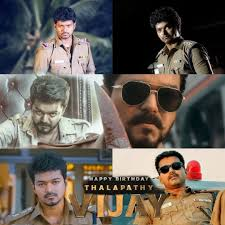

Actor | Singer | Politician
Joseph Vijay Chandrasekhar, famously known as Thalapathy Vijay, is a towering figure in Indian cinema and the founder of the political party Tamilaga Vettri Kazhagam (TVK). Born on June 22, 1974, in Chennai, he rose from a child actor to become one of the highest-paid stars in the country, celebrated for his dance, charisma, and massive fan following. Over a career spanning 69 films, Vijay delivered iconic hits like Ghilli, Thuppakki, and Leo. Known for his philanthropic work through the Vijay Makkal Iyakkam, he transitioned into full-time politics in 2024 to serve the people of Tamil Nadu. His final film, Jana Nayagan, released in January 2026, marking the end of his cinematic journey as he pivots to focus on secular social justice. Despite recent challenges, including a major stampede at a Karur rally and subsequent CBI questioning, he remains a pivotal force in the state's political landscape.
Sachein | Theri | Vettaikaran